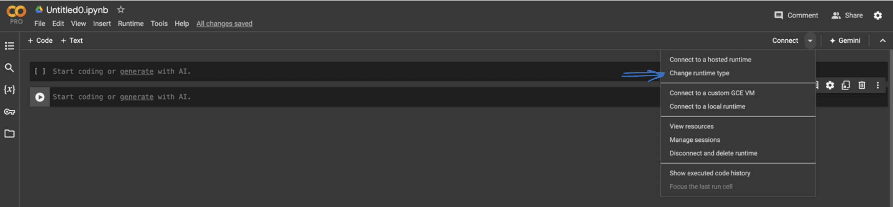

Fine Tuning - Deep Dive into Quantization , LoRA and SFT
Deep Dive into Quantization, LoRA and SFT
Introduction
In this lesson, we will dive deeper into Quantization and the mechanics of LoRA, a powerful method for optimizing the fine-tuning process of Large Language Models, its practical uses in various fine-tuning tasks, and the open-source resources that simplify its implementation. We will also introduce QLoRA, a highly efficient version of LoRA. By the end of this lesson, you will have an in-depth understanding of quantization and how LoRA and QLoRA can enhance the efficiency and accessibility of fine-tuning LLMs.
Understanding Quantization
As large language models, grow more advanced, their increasing number of parameters leads to significant memory usage. This, in turn, increases the costs of hosting and deploying these tools.
In this section, we will quickly learn about quantization. Quantization is a process that converts data that’s in your memory from high bit to low bit rate.
Quantization in Machine Learning
Neural Networks have millions or billions of parameters (floating point values) representing their weights and biases, a characteristic known as precision. The precision of these data types directly impacts the amount of memory required by the model. Using higher precision types, such as Float32 or Float64, offers greater accuracy but demands more memory. By default when you train your neural network ususally the parameters are stored in FP32, which means each paraeter takes 32 bits. The idea of Quantization is to reduce parameters that takes less space example 16 bit floating points(FP16) or Int8. If we store all the parameters in INT8 , it means everything be saved between 0 - 255, which will result in saving space 4 times comapred to FP32
Quantization can significantly reduce this memory requirement by representing parameters with fewer bits. For example, converting from 32-bit to smaller bit representations allows us to perform inference with the models more efficiently. Once models are quantized, they can be deployed on edge devices like phones, smartwatches, etc. However, using lower precision types, such as Float16 or BFloat16 or Int8, while saving memory, may result in a slight loss of accuracy. To overcome this loss in accuracy, techniques like Lora and QLoRA can be utilized.
Benefits of Quantization:
FP16 Quantization:
- Reduces the model size by half.
- Maintains higher precision than INT8.
- Suitable for GPUs and TPUs that support FP16 arithmetic.
INT8 Quantization:
- Significantly reduces model size and improves latency.
- Suitable for CPUs and hardware accelerators that support INT8 arithmetic.
By applying quantization, we can make large models more efficient and capable of running on a variety of devices, ensuring a balance between performance and resource utilization.
In the figure below, you can see the main floating point data types.
Why Quantization uses less memory
As mentioned above, the primary advantage of using quantization (4-bit) is the reduction in model size and memory usage. Here's a simple explanation:
- A float32 number takes up 32 bits of memory.
- A 4-bit quantized number takes up only 4 bits of memory. So, theoretically, you can fit 8 times more 4-bit quantized numbers into the same memory space as float32 numbers. This allows you to load larger models into the GPU memory or use smaller GPUs that might not have been able to handle the model otherwise.
Note: The amount of memory used by an integer in a computer system is directly related to the number of bits used to represent that integer.
Memory Usage for 4-bit Integer A 4-bit integer uses 4 bits of memory
Memory Usage for 32-bit Integer A 32-bit integer uses 32 bits of memory.
Conversion to Bytes To convert these to bytes (since memory is often measured in bytes):
1 byte = 8 bits
A 4-bit integer would use ( 4/8 = 0.5 ) bytes.
A 16-bit integer would use ( 16/8 = 2 ) bytes.
Let’s take Llama 2 as an example, to better understand this:
For example, you may come across config like this in Llama 2 model:
Note: The bitsandbytes library will be used for quantization and fine-tuning of models. It provides tools to reduce memory footprint and improve computational efficiency.
bnb_config = transformers.BitsAndBytesConfig(
load_in_4bit=True,
bnb_4bit_quant_type='nf4',
bnb_4bit_use_double_quant=True,
bnb_4bit_compute_dtype=bfloat16
)
load_in_4bit=True //Enables 4-bit quantization.
bnb_4bit_quant_type='nf4' //Specifies the type of 4-bit quantization.
bnb_4bit_use_double_quant=True //Enables double quantization for better accuracy.
bnb_4bit_compute_dtype=bfloat16 //Specifies the data type for computation, which is bfloat16 here.
By using 4-bit quantization, you can load the Llama 2 model with significantly less GPU memory, making it more accessible for devices with limited resources.
Understanding Quantization - Lab Example
We will be using and running the code in Google Colab. This code demonstrates how much memory can be saved by using 4-bit quantization compared to 32-bit floating-point precision for a hypothetical model with 1000 weights. It calculates the total memory required for both 32-bit and 4-bit representations, determines the memory savings, and converts the result to bytes for easier understanding.
By quantizing the model weights from 32-bit to 4-bit, significant memory savings are achieved, making it more efficient to deploy models on resource-constrained devices like phones and smartwatches.
If you have not yet created a Google Colab account, please refer to the following section
- Browse to Google Colab and create a new Notebook

- Select your runtime envoirnment

NOTE: As we will be running a hypothetical model in Google Colab, you can use the CPU to run the code below. Our goal is to understand how quantization can help us use less memory.
Reminder: Whenever you want to copy the below code into Google Colab and run it on individual line, be sure to click on + Code to add a new code cell. Also make sure to press the Play button to execute the code


- Let's break down the code step by step and explain what it does:
Step 1: Define Memory Weight for Float32:
1 2 | |
- float32_memory is set to 32 bits, which is the memory required for each weight when using 32-bit floating-point precision (Float32).
- num_weights is set to 1000, representing a hypothetical number of weights in the model.
Step 2: Calculate Total Memory for Float32 Weights:
1 | |
- float32_total_memory calculates the total memory required for all the weights when using Float32. This is done by multiplying the memory per weight (float32_memory) by the number of weights (num_weights).
Step 3: CDefine Memory Per Weight for 4-bit Quantization:
1 | |
- bit4_memory is set to 4 bits, which is the memory required for each weight when using 4-bit quantization.
Step 4: Calculate Total Memory for 4-bit Quantized Weights:
1 | |
- bit4_total_memory calculates the total memory required for all the weights when using 4-bit quantization. This is done by multiplying the memory per weight (bit4_memory) by the number of weights (num_weights).
Step 5: Calculate Memory Saved:
1 2 | |
- memory_saved calculates the total amount of memory saved by using 4-bit quantization instead of Float32. This is done by subtracting the total memory required for 4-bit weights (bit4_total_memory) from the total memory required for Float32 weights (float32_total_memory).
- memory_saved_in_bytes converts the saved memory from bits to bytes by dividing by 8 (since there are 8 bits in a byte).
Step 5: Print the Result:
1 | |
Memory saved by using 4-bit quantization: 3500.0 bytes
- Will changing the model from 32-bit to 4-bit reduce the model's accuracy? Yes
NOTE: Let's sets up the context of the code, indicating that reducing the bit-width from 32-bit to 4-bit quantization can introduce a loss of accuracy. Please us ethe same notebook as above to continue with your code.
Step 1: Import Python Library NumPY
1 | |
Step 2: Simulate Original float32 Weights:
1 | |
Step 3: Simulate 4-bit Quantized Weights:
1 | |
Step 4: De-normalize to Get the Approximated Original Weights:
1 | |
Step 5: Calculate the Error
1 | |
Step 6: Print the Result:
1 | |
OUTPUT
Average Quantization Error: 0.016423573800129817
Optional Step: Let’s see the original generated random floating point weights
original_weights
0.9047668 , 0.81753767, 0.15176044, 0.82469964, 0.26190883,
0.25543845, 0.91670144, 0.44082588, 0.8387138 , 0.5301147 ,
0.597587 , 0.28645265, 0.31866026, 0.8412814 , 0.87486124,
0.14635882, 0.00842665, 0.40396062, 0.7154632 , 0.92024857,
0.58492464, 0.369594 , 0.3199917 , 0.01947883, 0.5505348 ,
0.09161595, 0.75082487, 0.9818501 , 0.800069 , 0.55406606,
0.87903994, 0.6254798 , 0.8290317 , 0.73905164, 0.42614278,
0.6899402 , 0.03985518, 0.3132978 , 0.97768533, 0.42348453,
0.60850483, 0.80669063, 0.18966372, 0.79855096, 0.73046243,
0.3299927 , 0.79309106, 0.01327937, 0.01851322, 0.9269705 ,
0.8274083 , 0.45073316, 0.51967096, 0.7210426 , 0.41424063,
0.24505323, 0.90779364, 0.64724004, 0.65470797, 0.14317876,
0.91511154, 0.57397956, 0.83594376, 0.09163648, 0.3037902 ,
0.01362608, 0.92493033, 0.6721083 , 0.5777128 , 0.98029524,
0.29148692, 0.5840548 , 0.805403 , 0.17140059, 0.9880919 ,
0.01023464, 0.8627494 , 0.89710003, 0.76805186, 0.9278038 ,
0.9041322 , 0.19642776, 0.78401035, 0.16597563, 0.16709319,
0.41655192, 0.6231926 , 0.95298046, 0.6890473 , 0.79470664,
0.7721617 , 0.2800831 , 0.32485998, 0.83056533, 0.84955883,
0.9345336 , 0.20025656, 0.31240928, 0.0943019 , 0.92295516,
0.07533643, 0.2782531 , 0.34772104, 0.20622289, 0.6932999 ,
0.01451688, 0.05406734, 0.69295406, 0.56339973, 0.74457246,
0.8313878 , 0.51609147, 0.4473876 , 0.29768255, 0.9012652 ,
0.7957006 , 0.5588959 , 0.54948616, 0.41233262, 0.04758253,
0.09688636, 0.19657251, 0.60875326, 0.6305743 , 0.62236613,
0.53727114, 0.60597694, 0.27432016, 0.5396689 , 0.35570994,
0.7779527 , 0.62765694, 0.5046841 , 0.95913595, 0.37506285,
0.06490876, 0.5690066 , 0.5926366 , 0.8343261 , 0.00439525,
0.75573623, 0.89352626, 0.45979103, 0.16634902, 0.2184745,
0.39872894, 0.68869066, 0.08809475, 0.8567979 , 0.2187864,
0.21870795, 0.52296937, 0.16986693, 0.6928503 , 0.41990125,
0.5135413 , 0.45609972, 0.38769007, 0.00987561, 0.15869647,
0.80649745, 0.8347802 , 0.7420551 , 0.07340008, 0.6842359 ,
0.33549812, 0.6722021 , 0.3444218 , 0.7548876 , 0.67199737,
0.04117178, 0.24504112, 0.39629644, 0.6458071 , 0.4220033 ,
0.44719183, 0.00884627, 0.8429784 , 0.5802084 , 0.07012173,
0.2552524 , 0.23461716, 0.08043662, 0.17875864, 0.35063305,
0.99479717, 0.3229556 , 0.7217851 , 0.09103325, 0.00775268,
0.3796975 , 0.24862018, 0.32581842, 0.530216 , 0.71165705,
0.5170614 , 0.06309021, 0.6869316 , 0.9265822 , 0.04267561,
0.44075203, 0.28398433, 0.46985227, 0.5829586 , 0.23592392,
0.95805424, 0.52453846, 0.8329666 , 0.14974083, 0.48412293,
0.04571012, 0.8544567 , 0.89506125, 0.10473824, 0.29405326,
0.29569003, 0.59090966, 0.66576856, 0.35182896, 0.12008226,
0.49510583, 0.8308251 , 0.14861059, 0.5513083 , 0.45685318,
0.8333833 , 0.9543581 , 0.42451006, 0.6116371 , 0.76232755,
0.81956553, 0.89240205, 0.2516925 , 0.92773354, 0.9864879 ,
0.04117434, 0.78647643, 0.21779937, 0.3965154 , 0.6441789 ,
0.6636646 , 0.547766 , 0.8827409 , 0.24284157, 0.1969708 ,
0.5668731 , 0.78194785, 0.6832345 , 0.10209882, 0.97626406,
0.5010292 , 0.12451114, 0.32503366, 0.17754969, 0.53745407],
dtype=float32)
Optional Step Lets see the quantized_weights (4- bit)
quantized_weights
6, 1, 2, 1, 8, 14, 3, 9, 13, 1, 10, 5, 14, 12, 13, 9, 2,
4, 1, 6, 7, 5, 15, 3, 0, 9, 9, 12, 2, 6, 11, 4, 3, 13,
8, 7, 14, 4, 9, 10, 0, 8, 9, 6, 9, 10, 8, 4, 1, 13, 1,
7, 3, 13, 5, 3, 11, 6, 12, 8, 8, 2, 8, 13, 10, 6, 6, 0,
0, 3, 7, 10, 11, 4, 11, 13, 3, 8, 8, 1, 5, 5, 7, 2, 13,
5, 12, 4, 11, 6, 9, 6, 8, 13, 4, 13, 6, 6, 15, 13, 2, 0,
4, 15, 7, 7, 5, 5, 2, 4, 8, 8, 15, 6, 11, 9, 12, 1, 13,
3, 14, 8, 1, 5, 15, 1, 9, 7, 1, 1, 13, 11, 12, 4, 5, 9,
14, 11, 14, 0, 12, 12, 2, 4, 9, 10, 8, 7, 3, 7, 9, 1, 13,
7, 9, 7, 12, 14, 11, 3, 11, 9, 11, 1, 13, 9, 4, 5, 2, 15,
8, 13, 1, 9, 3, 15, 3, 3, 12, 8, 14, 7, 11, 13, 3, 0, 10,
15, 11, 14, 4, 11, 7, 6, 13, 1, 4, 10, 1, 11, 9, 2, 10, 11,
8, 1, 5, 7, 8, 11, 13, 3, 3, 14, 4, 10, 10, 1, 6, 12, 13,
12, 7, 6, 8, 9, 10, 7, 12, 11, 1, 7, 14, 13, 8, 14, 1, 13,
7, 9, 12, 14, 14, 1, 14, 14, 11, 13, 2, 9, 11, 1, 13, 1, 13,
2, 8, 12, 1, 6, 7, 1, 12, 7, 4, 6, 8, 9, 8, 4, 1, 7,
13, 7, 12, 0, 6, 7, 11, 15, 7, 6, 13, 12, 12, 10, 8, 9, 12,
0, 10, 1, 13, 9, 3, 2, 14, 9, 6, 9, 6, 4, 15, 5, 5, 5,
12, 5, 15, 4, 7, 0, 3, 3, 15, 15, 3, 10, 2, 15, 7, 8, 2,
2, 10, 11, 14, 4, 0, 8, 1, 8, 5, 1, 12, 5, 6, 14, 11, 10,
2, 6, 11, 12, 8, 12, 0, 14, 12, 4, 9, 11, 7, 14, 2, 4, 4,
10, 4, 13, 1, 14, 0, 15, 8, 6, 5, 12, 10, 6, 1, 4, 7, 7,
7, 10, 10, 5, 8, 12, 8, 6, 12, 2, 1, 14, 15, 13, 9, 3, 3,
8, 7, 3, 10, 7, 1, 10, 7, 6, 4, 8, 2, 11, 2, 15, 2, 11,
12, 10, 5, 7, 13, 2, 6, 15, 13, 6, 1, 10, 12, 10, 11, 4, 1,
8, 3, 4, 12, 15, 12, 9, 8, 1, 12, 2, 2, 14, 2, 9, 7, 4,
4, 3, 2, 11, 0, 5, 9, 12, 15, 14, 13, 1, 15, 3, 12, 10, 3,
13, 5, 8, 9, 15, 2, 14, 8, 8, 6, 7, 1, 6, 3, 15, 3, 0,
13, 9, 6, 12, 5, 5, 5, 9, 9, 2, 13, 15, 3, 9, 11, 1, 8,
13, 9, 12, 14, 5, 9, 2, 8, 14, 10, 4, 12, 8, 9, 10, 13, 14,
3, 1, 14, 9, 9, 12, 2, 1, 7, 4, 2, 0, 4, 10, 2, 6, 3,
10, 10, 9, 11, 9, 8, 15, 12, 3, 2, 5, 9, 6, 11, 1, 9, 5,
14, 7, 14, 4, 13, 14, 5, 8, 14, 10, 12, 3, 1, 12, 9, 14, 1,
2, 11, 11, 2, 2, 13, 12, 3, 4, 12, 7, 1, 9, 3, 4, 4, 14,
14, 8, 0, 12, 8, 6, 12, 13, 6, 11, 6, 10, 9, 6, 2, 14, 10,
4, 10, 2, 15, 9, 14, 0, 4, 0, 10, 1, 15, 5, 7, 10, 6, 12,
10, 11, 6, 7, 2, 14, 8, 12, 7, 14, 9, 13, 0, 5, 7, 2, 11,
9, 11, 13, 10, 14, 8, 8, 14, 4, 10, 1, 11, 15, 10, 0, 6, 0,
13, 14, 9, 4, 4, 12, 5, 9, 4, 6, 2, 10, 3, 4, 1, 14, 11,
6, 7, 1, 4, 11, 1, 7, 12, 8, 14, 2, 8, 8, 3, 11, 15, 10,
2, 14, 12, 2, 12, 4, 4, 14, 7, 13, 8, 9, 4, 5, 13, 13, 2,
0, 6, 11, 14, 9, 6, 5, 0, 8, 1, 11, 15, 12, 8, 13, 9, 12,
11, 6, 10, 1, 5, 15, 6, 9, 12, 3, 12, 11, 5, 12, 0, 0, 14,
12, 7, 8, 11, 6, 4, 14, 10, 10, 2, 14, 9, 13, 1, 5, 0, 14,
10, 9, 15, 4, 9, 12, 3, 15, 0, 13, 13, 12, 14, 14, 3, 12, 2,
3, 6, 9, 14, 10, 12, 12, 4, 5, 12, 13, 14, 3, 5, 1, 14, 1,
4, 5, 3, 10, 0, 1, 10, 8, 11, 12, 8, 7, 4, 14, 12, 8, 8,
6, 1, 1, 3, 9, 9, 9, 8, 9, 4, 8, 5, 12, 9, 8, 14, 6,
1, 9, 9, 13, 0, 11, 13, 7, 2, 3, 3, 14, 12, 11, 4, 13, 15,
4, 7, 13, 13, 0, 8, 13, 13, 15, 8, 15, 3, 11, 4, 8, 9, 2,
2, 11, 3, 7, 4, 7, 11, 6, 10, 1, 13, 3, 8, 3, 10, 6, 8,
7, 6, 0, 2, 12, 13, 11, 1, 10, 5, 10, 5, 11, 10, 1, 4, 6,
10, 6, 7, 0, 13, 9, 1, 4, 4, 1, 3, 5, 15, 5, 11, 1, 0,
6, 4, 5, 8, 11, 8, 1, 10, 14, 1, 7, 4, 7, 9, 4, 14, 8,
12, 2, 7, 1, 13, 13, 2, 4, 4, 9, 10, 5, 2, 7, 12, 2, 8,
7, 13, 14, 6, 9, 11, 12, 13, 4, 14, 15, 1, 12, 3, 6, 10, 10,
8, 13, 4, 3, 9, 12, 10, 2, 15, 8, 2, 5, 3,
dtype=uint8)
-
After quantizing LLMs (Large Language Models) from 32-bit to 8-bit precision, we achieve significant reductions in memory usage and computational demands. However, this process can also result in some loss of information and a decrease in accuracy. This brings up an important question: why should we fine-tune a quantized model?
-
Fine-tuning becomes crucial in this context because it helps to restore or even enhance the model's performance after quantization. By fine-tuning, we can adapt the model to specific tasks or datasets, which can mitigate the accuracy loss that occurs during quantization.
The Functioning of LoRA in Fine-tuning LLMs
LoRA, or Low-Rank Adaptation, is a method developed by Microsoft researchers to optimize the fine-tuning of Large Language Models. This technique tackles the issues related to the fine-tuning process, such as extensive memory demands and computational inefficiency. LoRA introduces a compact set of parameters, referred to as low-rank matrices, to store the necessary changes in the model instead of altering all parameters.
Here are the key features of how LoRA operates:
- Maintaining Pretrained Weights: LoRA adopts a unique strategy by preserving the pretrained weights of the model. This approach reduces the risk of catastrophic forgetting, ensuring the model maintains the valuable knowledge it gained during pretraining.
- Efficient Rank-Decomposition: LoRA incorporates rank-decomposition weight matrices, known as update matrices, to the existing weights. Rank decomposition is a way to simplify a large, complex matric by breaking it down into the product of smaller matrices. These update matrices have significantly fewer parameters than the original model, making them highly memory-efficient. By training only these newly added weights, LoRA achieves a faster training process with reduced memory demands. These LoRA matrices are typically integrated into the attention layers of the original model.
By using the low-rank decomposition approach, the memory demands for training large language models are significantly reduced. This allows running fine-tuning tasks on consumer-grade GPUs, making the benefits of LoRA available to a broader range of researchers and developers.
Open-source Resources for LoRA
The following libraries offer a mix of tools that enhance the efficiency of fine-tuning large language models. They provide optimizations, compatibility with different data types, resource efficiency, and user-friendly interfaces that accommodate various tasks and hardware configurations.
- PEFT Library: Parameter-efficient fine-tuning (PEFT) methods facilitate efficient adaptation of pre-trained language models to various downstream applications without fine-tuning all the model's parameters. By fine-tuning only a portion of the model's parameters, PEFT methods like LoRA, Prefix Tuning, and P-Tuning, including QLoRA, significantly reduce computational and storage costs.
- Lit-GPT: Lit-GPT from LightningAI is an open-source resource designed to simplify the fine-tuning process, making it easier to apply LoRA's techniques without manually altering the core model architecture. Models available for this purpose include Vicuna, Pythia, and Falcon. Specific configurations can be applied to different weight matrices, and precision settings can be adjusted to manage memory consumption.
In our lab, we’ll focus on the PEFT library.
QLoRA: An Efficient Variant of LoRA
QLoRA, or Quantized Low-Rank Adaptation, is a popular variant of LoRA that makes fine-tuning large language models even more efficient. QLoRA introduces several innovations to save memory without sacrificing performance.
The technique involves backpropagating gradients through a frozen, 4-bit quantized pretrained language model into Low-Rank Adapters. This approach significantly reduces memory usage, enabling the fine-tuning of even larger models on consumer-grade GPUs. For instance, QLoRA can fine-tune a 65 billion parameter model on a single 48GB GPU while preserving full 16-bit fine-tuning task performance.
QLoRA uses a new data type known as 4-bit NormalFloat (NF4), which is optimal for normally distributed weights. It also employs double quantization to reduce the average memory footprint by quantizing the quantization constants and paged optimizers to manage memory spikes.
The practical implementation of QLoRA for fine-tuning LLMs is very accessible, thanks to open-source libraries and tools. For instance, the BitsAndBytes library offers functionalities for 4-bit quantization. In the coming sections we will see a code example showing how to use QLoRA with PEFT.
Conclusion
In this lesson, we explored LoRA and QLoRA, two powerful techniques for fine-tuning Large Language Models (LLMs). We examined how LoRA operates by preserving pretrained weights and introducing low-rank matrices, thereby enhancing the memory and computational efficiency of the fine-tuning process. We also highlighted open-source libraries like PEFT and Lit-GPT that facilitate the implementation of LoRA.
Additionally, we discussed QLoRA, an efficient variant of LoRA that employs 4-bit NormalFloat and double quantization to further reduce memory usage. This technique allows for significant memory savings but can introduce quantization errors, impacting model accuracy.
By quantizing weights to lower precision, we achieve reduced memory usage and potentially increased processing speed, at the cost of a possible minor loss in accuracy. The provided code example illustrates this trade-off by converting a set of 32-bit floating-point weights into 4-bit integer weights, demonstrating the balance between memory efficiency and model accuracy.
Overall, you have successfully learned how to use quantization to optimize LLMs, understanding the benefits and potential drawbacks of this approach.